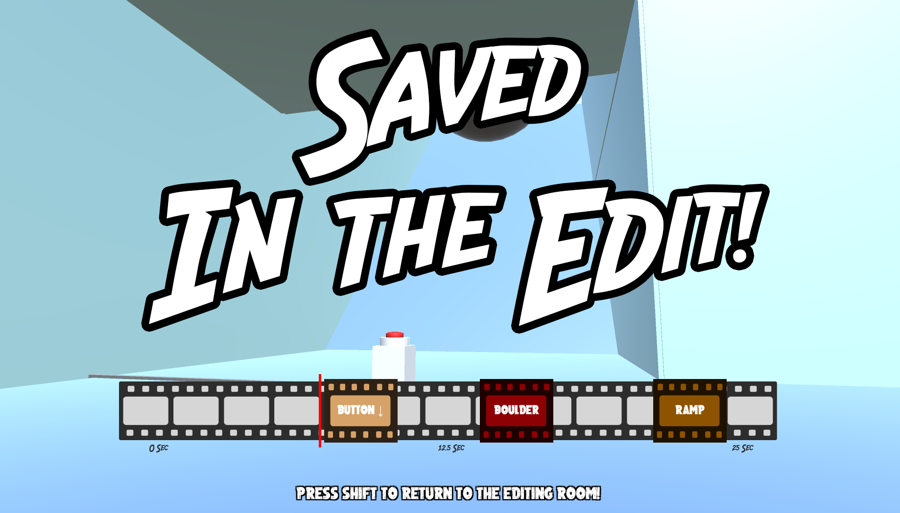

SAVED IN THE EDIT

ABOUT
A 3D First Person Puzzle game where you have to rearrange film fragments to solve puzzles by changing the timeline
of how things happen in each level, created for the 2020 Global Game Jam. Repair the timeline and get through the
increasingly complicated levels.
DEVELOPMENT INFO
-
Developed by Seyhyun Yang, Jacob Smellie, Michael Tilbury, and Amber Renton
-
48 hour development cycle (February 2020)
-
4 developers
-
Made using Unity Engine
CONTRIBUTIONS
CONTRIBUTIONS
My major contribution to this project was the implementation of event timeline calculation for the eventsystem to use, and the design and implementation of the 3 levels.
The timeline calculation was simply done by calculation and distance from the left side of the empty film reel to each 'event' file strip, and converting into a percentage,
which would initiate the events at those corresponding percentages of the total time of each level. For the level design, we ended up hand-crafting each level out Unity
Primitives, specifically cubes. The first level was designed to introduce the players to the basic concept of the timeline-arrangement gameplay and the button mechanic, and
the power line mechanics. The second level introduced the concept of breakable walls, while expanding, and complicating the button mechanics. The third level introduces
moving platforms, and further expanded the button mechanics, requiring the player to get the order and timing of each button press correct, while platforming on the moving
platforms. While this was were the game stopped, several other levels and mechanics were designed. The next level would have introduced using buttons to control the movement
of large objects, and transporting those objects using moving platforms. The final level would have been a very challenging level, using all the previously learned mechanics
concurrently, and would have been a test of skill and memorization of the timeline. However, this was unable to make it into the game.